The Ruined Tower
A long day's march from Stonetop, a wide, low hill rises from the Flats.
A pile of earth and stone squats atop that hill. Metal spires reach out of the pile, piercing the sky. If you squint, you can see the rubble for what it is: a broken tower, once grand in scale, long ago brought low.
Everyone from Stonetop knows about the Ruined Tower and the giant-sized tunnels beneath it. Adventuresome folks sometimes think to explore them. Most of the time, they get spooked and don't go far.
But those who've delved deeper have come back with wondrous things. Or never come back at all.
Stormcatcher's tower
Before the tower fell, this was home to Stormcatcher, last (?) of the Tempest Lords. The tower was like the mast of some mighty ship, catching wind and lightning, holding their power in the Storm Orb, fueling her many magics.
For centuries, Stormcatcher's tower stood betwixt the realms of the other Makers. They would trade with her, and seek her council or her aid. But though the Makers' Roads ran to her very gate, she stood apart from them all.
Yet she did not live alone. A bustling community grew up around her tower. Laborers, artisans, and scholars. Farmers and domestic help. Soldiers, even. Generations of families. Refugees seeking new homes.
Ambassadors and outcasts from the other
Makers. Seekers, misfits, and castaways from distant lands.
When the Time of Cataclysm came—when the Stone Lords' slaves rebelled and unleashed the Things Below, when the Rime Lords' disciples turned savage, when the Forge Lords' cities were buried by ash and war—Stormcatcher's tower endured. A bastion of civilization.
An island of safety. A refuge.
It could not last. Cultists of Og'molok the Faceless Horde swarmed the ramparts, driving the defenders back.
Og'molok itself burst forth from below as a wave of skittering horrors.
Stormcatcher unleashed a mighty spell that turned the attackers into glass. But that same spell shattered the Storm Orb. It laid waste to the tower and broke a stretch of the Makers' Roads. It wrought Stormcatcher's doom.
Many of the tower's residents fled through a portal beneath the tower. But most were slaughtered by the attackers, or vitrified along with them, or caught in the Storm Orb's explosion. A slim few survivors remained and tried to rebuild, but they soon fell prey to the horrors now loose upon the world.
In the centuries since, many have tried to claim the ruin, or plunder its treasures and its secrets. But all have failed, for one reason or another.
And the Ruined Tower remains.
Lore
Everyone from Stonetop knows:
- Where the tower is
- About the giant-sized tunnels below
- That some brave (foolish) folk have explored them, and found terrible and wondrous things
One might know:
- A tale or two about folks who've explored here and what they found
- Details about the ruins above ground, or some of the upper tunnels
- That the tower is a ruin of the Tempest Lords
- That it was the last of the Makers' strongholds to fall
- That pieces of the tower can be found strewn all around the Flats
- That the outer ruins, the tower itself, and the upper tunnels have all been heavily looted, but still yield the occasional trinket
Very few know:
- Stormcatcher's story
- Her relationship with the other Makers
- How exactly the tower fell
- Reliable details about the depths
- Anything at all about Og'molok, the Faceless Horde
Questions
- Which one of you has braved these ruins before? What kept you from going very far?
- What wondrous trinket back in Stonetop supposedly came from here? Who has it now, and what do they use it for?
- What marvel is said to lie below the Ruined Tower? From whom did you hear such tales?
- When the nightmares come and you dream of the tower's fall, are you one of the doomed defenders? Or part of the slavering horde?
the tower itself
Hooks
- Bandits squat in the ruins, and find an artifact that makes them extra dangerous.
- A sorcerer is raising her demonic child in the tower's depths.
- A drunk wanderer claims to have explored the depths, but his friends didn't make it out.
- A southern scholar plans to delve the tower and seeks local help.
- Frequent earthquakes coincide with terrible nightmares, especially for those touched by violence. The nightmares feature the tower, its fall, or the tunnels below.
Getting there
To get there from Stonetop, take the West Road 3-4 hours to the Crossroads. From there, it's 5-6 hours southwest across the Flats.
Areas
- Overgrown berm, about 15-20' tall, encircling the tower ~3/4 mile out. Huge dressed stones poke out, similar to the Old Wall.
- Outer ruins between the berm and the tower. Once a thriving town, now just a jumble of ruins mostly swallowed by the prairie.
- A shallow crater, stretching ~400' from the tower's northeast edge. Grass/soil/ mud/standing water cover glassy, slaglike bedrock.
- The tower itself: ~300' across. Northeast third is mostly rubble, but to the south and west a few floors remain, with walls ~200' tall.
- The upper tunnels start ~100' below the surface. Heavily looted, very haunted, mostly maintained by a ghostly Forge Lord and his patchwork constructs.
- The depths are even further down, a warren of chambers, halls, stairs, chutes, and burrows, all in various states of repair. Full of infrastructure, artifacts, experiments, prisons, and vitrified horrors.
Aboveground
The Ruined Tower sits atop a wide, low, lightly wooded hill. From a distance, it's just a landmark. As one gets closer, it becomes clear just how massive the tower once was.
Impressions
Anywhere
- Southerly wind, ever-blowing
- Squeak and shriek of metal spires when the wind picks up
- Metallic barks and chirps from high up, the snap of a metal cable
- The looming scale of the thing, big as the landscape, hard to take in
- Smell of ozone, even on a clear day
- A fluting warble; a mocking laugh, a flash of bright blue feathers
Outer ruins
- Piles of earth dotting the land, tufts of grass and brush growing on them
- The uneven, rugged terrain, making it so you can never catch your stride
- Occasional bits of broken pottery or metal, centuries-old, just lying there, turned up from the dirt
Inside a building or the tower
- Cave-like darkness, coolness, and stillness as they step inside
- Faded mosaics/carvings, obscured by time, vandalism, erosion, lichen
- Dim sunbeams, full of floating dust
- Wind whistling in through cracks in walls/ceilings; water dripping through those cracks in the rain
Terrain
Pick 1 or combine 2, or have someone roll the Die of Fate ().
| 1 | Barren patch of sand/dust/glass |
|---|---|
| 2 | Mud/standing water/deep snow |
| 3 | Ditch, gully, or embankment; the outline of buried ruins |
| 4 | Exposed wall(s), crumbling and covered in moss/lichen |
| 5-6 | Stretch of grass, feet tall |
| 7 | Shrubs, thicket, tree(s)—maybe even dool trees |
| 8 | Huge stone slab, partly buried; a fallen piece of the tower |
| 9-10 | Pile of dirt/stone and a nearby pit; an excavation or burrow |
| 11-12 | building (see below), at least somewhat intact |
| 1-8 | From before the tower's fall; pick or roll for its purpose |
|---|---|
| 9-11 | Built after the tower's fall; pick or roll for its purpose |
| 12 | A barrow (Barrow Builders roll for size) |
| 1-2 | Home/barracks/living space |
|---|---|
| 3-4 | Kitchen/laundry/bath/latrine |
| 5-6 | Gathering/meetings/civic life |
| 7-8 | Storage/cellar/stable/tomb |
| 9-10 | Work/production/creation |
| 11-12 | Esoterica/experimentation |
The Tower itself
The base of the tower is ~300' across; rubble and piled-up soil spread out even farther. The south and west sections still stand tall, rising ~200' from the hilltop.
Spires: Four metal spires support the tower's walls, one at each cardinal direction:
massive, rusted, straining towards the sky.
The south and west spires each stretch another 200' or so above the walls (~400' tall total). A length of cable dangles from the tip of the south spire.
Rubble: The northeast third of the tower is just rubble, thick walls, and soil piled
~30' high, topped with grass and shrubs.
The rubble is riddled with trenches, pits, old excavations, buried rooms, burrows.
Ground floor: The south and west thirds of the tower are intact at ground level, containing huge vaulted chambers (~40' ceilings), including:
- A parlor with tall narrow windows. Stylized friezes (faded, vandalized, full of bird nests) show scenes of the Tempest Lord empire.
- The baths, a deep pool full of vile, stagnant water. The walls are busted open, the pipes looted.
- The great hall, mostly intact, with a giant stone table. The ceiling is enchanted to show the night sky.
Human-scale servant passages/rooms parallel the larger chambers and halls.
Inlays: Rooms inside the tower once had aetherium inlays all along their walls and ceilings, but those were gouged away long ago by looters and thunder drakes.
Main stairwell: A circular shaft at the tower's center, 30' wide. Goes up to the second floor, down ~100' to the upper tunnels.
Human-scale stairs spiral along the outer wall, far too small for Makers. Did they fly?
Upper floors: The second floor is ~50' up and partly open to the sky, covering the southwest half of the tower. Accessible via the stairwell, holes in ceilings, or climbing the outer walls. A few intact rooms remain, where blue magpies stash shinies and build elaborate mosaics.
The third and fourth floors are another 40' up each, accessible only via tricky climbs.
Unstable, with only a few "rooms," all of which are at least partly open to the air.
Magpie nests abound.
Creating rooms
For any specific room that you establish, pick or roll for a purpose (previous page) and combine it with a Tempest Lord theme.
Imagine the room before the fall. Now, how was it affected by the attack? By the Storm Orb exploding? By centuries of looting, vandalism, weathering, and neglect? Who or what has lived here since?
What details remains to tell this story?
What discoveries are waiting to be found?
Discoveries
For any of these, pick 1 or have someone roll the Die of Fate.
| 1 | Change of terrain and roll again |
|---|---|
| 2 | A chance for insight into a threat or danger (tracks that reveal numbers, whereabouts, etc.) |
| 3 | remnants of the past (see below) |
| 4 | An encounter (next column) |
| 5 | Useful or valuable flora, growing among the ruins |
| 6 | Something valuable (next column) |
| 1 | Exposed stonework, marred by cataclysmic violence (melted, shattered, etc.) |
|---|---|
| 2 | Bits of ancient daily life (pots, tools, utensils, etc.), probably broken, possibly giant-sized |
| 3 | Signs of squatters/explorers: bones, litter, graffiti, excavation, crude construction, etc. |
| 4 | Vitrified remains |
| 5 | Ancient writing or artwork, faded/ obscured but still legible (immobile, fragile, Value 0-2) |
| 6 | A building/room, undisturbed for centuries, with treasure! Discoveries you'd otherwise find only in the depths |
| 1 | A pyped, hiding from the sun or out at night, digging old bones to sup on the marrow |
|---|---|
| 2 | Blue magpies, digging for shinies, foraging, or gossiping, maybe mocking/pranking the PCs |
| 3 | Critter(s)—fox, skunk, stoat, hares, prairie dogs, starlings, vultures, etc. —curious, annoying, maybe just cute |
| 4 | Larger animal(s)—deer, a ground sloth, wild sheep, maybe some aurochs—grazing near the ruins |
| 5 | Someone else, exploring/making camp, wary but not hostile: some Hillfolk, adventurers and an antiquarian, cultists, a sorcerer, etc. |
| 6 | A hidden entrance to the upper tunnels or the even the depths (a caved-in ceiling, a burrow, a chute, a secret door, etc.) |
| 1 | Big ◇◇ bits of metal (Value 1): melted/cracked/corroded/rusted |
|---|---|
| 2 | A gold ingot (Value 2), once jewelry, fused into a lump |
| 3 | A piece of makerglass, overlooked by prior looters |
| 4 | A shard of the Storm Orb (next page) |
| 5 | A half-buried plaque, or some other artifact of the Tempest Lords. |
| 6 | An artifact of the Barrow Builders, evidence that they were here, too |
Shards of the Storm Orb
It was a filigree sphere of aetherium, maybe 50' across. It floated near the tower, a battery and a focus for tremendous elemental power.
Stormcatcher's final spell caused the Orb to explode. Shards were flung across the Flats, into the tower itself, and deep into the soil—to someday be unearthed by erosion, earthquakes, or burrowing beasts.
If the PCs encounter a shard, pick or roll for its size and signs.
| 1 | Small (Value 0) |
|---|---|
| 2 | ◇ (Value 1) |
| 3-4 | ◇◇ (Value 2) |
| 5 | ◇◇ (cumbersome, Value 2) |
| 6 | Immobile (Value 3 or more) |
| 1 | Hums/whines, painfully loud to those who can sense spirits |
|---|---|
| 2 | Vibrations make odd patterns in soil, prevent growth |
| 3 | Floats in a pocket of air, loosely covered by rock/soil |
| 4 | Makes skin tingle, hair stand up |
| 5 | Nearby soil/stone is blue-white, plants/lichen glow |
| 6 | Roll twice Shards of the Storm Orb are unstable aetherium (magical, dangerous). If damaged or overloaded, they might explode or violently discharge energy. But they are also etched with arcane runes. Find a big enough piece, or assemble enough smaller ones, and you might unlock some of the Tempest Lords' secrets. |
Vitrified remains
Stormcatcher's last spell turned anyone it touched into lumps of jagged glass. It was directed at Og'molok and the skittering horrors, but many of the attacking cultists were caught by the spell as well. So were some of the tower's residents.
Above ground, vitrified remains are mostly people (attackers or residents), with a few domesticated animals. Most are jagged lumps of black-grey glass, only vaguely recognizable as what they once were, and/ or broken by time or vandalism. These are covered in sharp edges ( damage, messy,
1 piercing).
A few of these vitrified remains, though, are perfect glass statues, the fear or frenzy of their final moments frozen on their faces (immobile, fragile, Value 3 to the right buyer).
Vitrification can be reversed, but it's up to you to decide how.
Dangers
Hazards
- Old construction, giving way under foot or collapsing on someone
- A difficult climb or some missing stairs, a reason to risk it
- Earthquakes and tremors
- Hidden holes/burrows, twisting an ankle or worse
- Nasty weather: heat, cold, wind, sleet, hail, rain, snow, thunder (not so much lightning, as the spires draw it all)
- Prairie fire among the outer ruins
- Unstable spells, aetherium, perilous stone
Monsters and such
- The nosgalau, at night
- Thunder drakes, digging for metal, especially aetherium
- Any of the other beasts of the Flats
- An encampment of Hillfolk, bandits, cultists, etc.
- Looters/explorers: adventurers, an antiquarian, a hdour, a sorcerer, etc.
- Ghosts or revenants of those who died when the tower fell, or from some later misadventure
- A pyped, digging up old bones where they can
 Blue Magpie
Blue Magpie
HP 1; Armor 1 (size)
Damage peck w/disadvantage (hand)
Special qualities smart as a child (at least); can speak Tempest Lord (understood by all)
Instinct to amuse/impress its friends
- Pretend to be just a dumb bird
- Mimic sounds or voices
- Mock or trick someone
- Steal something
- Vanish with a hrummm and reappear nearby (reload)
Like big crows with white-and-azure plumage. Their songs are piping and musical, playful and complex, sprinkled with actual voices and other unlikely sounds. A few dozen of them nest in the tower and the surrounding ruins. Smaller mischiefs nest in the Flats.
Stormcatcher kept blue magpies as pets, and their descendants have passed down much oral lore. Sneak up on them, and you might overhear magpies telling each other tales that southern scholars would kill to know.
Magpies find humans boorish, but fun to mess with, and they have such neat stuff.
They love shiny objects, especially glass and fragments of larger things, and spend years making elaborate mosaics or piecing puzzles together.
Belowground
Most of the rooms and halls below the tower are spacious, vaulted to ~30'. Doorways are ~25' tall and mostly ~10' wide.
There are a few human-scale rooms, but not many.
Impressions
Throughout
- A sense of smallness, of being swallowed by the dark
- Walls and ceilings beyond the limit of your light
- Distant sounds: dripping, rattling clanging, moaning (?), footfalls, skittering
- The thought of all that stone and earth above you
The upper tunnels
- Surprisingly little dust, mud, debris
- Paths worn smooth, as from the tread of countless feet
- Faded gouges in flagstones, like heavy, sharp things were dragged across them, long long ago
- Carefully stacked rubble, plugging holes in walls, blocking off passages
- The sense that you're not alone, that you're being watched
The depths
- Kicked-up dust, catching in your throat, making eyes water
- The looming menace of a vitrified horror, the skip in your heart before you realize it's just dead glass
- A thrum or whine, felt in your gut, your teeth, the back of your eyes
- Wait, haven't we been here before?
Aetherium inlays
The four metal spires extend down through the bedrock. They run through a number of underground rooms and passages, as freestanding pillars or embedded in walls.
Most rooms in and below the tower bear aetherium inlays, spreading out from the metal spires. The inlays distribute power and anchor certain spells. Or at least, they used to.
The aetherium has been stripped from most of the upper tunnels, either carefully salvaged by patchwork constructs or gouged out by looters. More inlays survive in the depths, but even there, many have been marred by star-moles or the claws of skittering horrors, or burnt out and reduced to crumbly chalk.
Where intact, inlays glow and pulse in response to winds above ground. When lightning strikes a spire, the aetherium flashes a bright blue-white. Some inlays are stable, but others are erratic and prone to discharge ( damage, forceful, maybe loud).
Sites
- Central chamber at the base of the main stairwell. Big, wellkept, drains in floor, multiple exits.
- Forge and nearby rooms, haunted by Ferocedes, packed with tools/parts and constructs in various states of repair.
- Aetherium crucible, near the forge. Dusty, unused, broken beyond Ferocedes's ability to fix with what's currently available to him.
- Barracks for soldiers who guarded the Portal (next column). Haunted by evacuees who hid and died there.
- Latrine near the barracks, with rattling, moaning, clanging pipes and still-working (!) showers.
- Large chamber, out of the way, the entrance blocked by piled stones. Packed full of vitrified horrors by Ferocedes's constructs.
- Frozen room, a chokepoint filled with dark ice, encasing dozens of skittering horrors and an Ustrina who served as Stormcatcher's steward.
- Oubliette, a dead-end hall with multiple cells/vaults. Each holds or held a dangerous artifact or entity in stasis. Some are torn open. The rest are guarded by wards, devices, constructs, magic.
- Bottommost chamber, 400' across, partly flooded. Holds the feet of all four spires, a massive toroidal coil, hundreds of vitrified horrors, and the trapped manifestation of Og'molok, the Faceless Horde.
The Portal
In the upper tunnels, one can find a pair of double-doors: locked and warded, barricaded from within, with countless gouges clawed across their surface.
Beyond those doors: an austere room with a dozen vitrified people, blown-out lightning sconces, a makerglass window to the next room, and yet another locked door.
Beyond that: a once-stately sitting room (the furniture used for the barricade), a few more vitrified evacuees. Another door, this one ajar.
One last room. The far wall is a solid white slab, etched with a magic circle. It's a portal, connected to those in the Labyrinth, Three Coven Lake, Vor Svetelik, and so forth. It is fully functional, and can be used via Opening the Way.
Layers of wards are etched in the floor, directed towards the portal, guarding against things coming out.
Rooms & passages
When you need to describe a room or passage, pick a shape and one or more features, or have someone roll the Die of Fate ().
| 1-3 | Hallway, relatively narrow |
|---|---|
| 4-5 | Square/rectangle/block |
| 6-7 | Intersection |
| 8 | Round/sphere/dome/bowl |
| 9 | Hexagon/octagon/etc. |
| 10 | Irregular (L-shape, blob, etc.) |
| 11-12 | Cluster: roll , times |
| 1 | Obstruction: locked door, rubble, cave-in, barricade, many vitrified horrors, etc. |
|---|---|
| 2 | Fungus/lichen/slime/vermin |
| 3 | Drips/leaks/mud/standing water |
| 4 | Pipes, valves, pumps |
| 5 | Human-scale construction |
| 6 | Stairs/ramp/chute/platforms |
| 7 | Grandiose scale, a massive room |
| 8 | Unplanned exit/passage (burrow, collapsed construction, etc.) |
| 9 | Extensive and/or notably intact aetherium inlays; perhaps a metal pillar (one of the four spires, The Tower itself) |
| 10 | A wonder (see below) |
| 11 | Roll twice |
| 12 | Roll three times Consider rolling for the scope or condition of any room/passage/feature. Fill it with discoveries and/or dangers as you see fit. |
Wonders
Stormcatcher kept many experiments, curiosities, and dangerous phenomena.
Pick 1, roll , or make up your own.
| 1 | A fountain, its hidden pumps powered by aetherium. |
|---|---|
| 2 | Nexus of pipes, pumps, boilers. By a stairwell, kept up by patchwork constructs. |
| 3 | Deep pit, smooth walls, a jellied horror trapped below. Used as a midden pit. |
| 4 | A huge stone slab, with fittings that make hot, steady flame on demand. |
| 5 | Room full of plants (exotic, useful, valuable, dangerous). Lit by a makerglass sun, watered by pipes, tended by a fertility spirit. |
| 6 | Huge orrery. Bits are melted, fused, burnt out; "stars" stuck in a potent cosmic alignment. |
| 7 | Knee-high dust, shapes itself into whatever an occupant thinks of. Crumbles if removed from room. |
| 8 | Freestanding arch. Pass through and you vanish. Exit ~5 seconds later, seems instantaneous to you. |
| 9 | Tight-packed aetherium inlays. Hazy images show what anyone in the room is about to do. |
| 10 | Sliding tiles in walls/ceiling/floor change gravity's direction and/or intensity in the room. |
| 11 | Airless room with small floating black sphere, annihilates any matter it touches. |
| 12 | Black lightning crackles between two prongs, ~3' apart. Fine glass dust all around. A vitrifying bolt, just barely contained. |
Discoveries
For any of these, pick 1 or have someone roll the Die of Fate.
| 1 | A chance for insight into a threat or danger (e.g. tracks that reveal numbers, whereabouts, etc.) |
|---|---|
| 2-3 | A vignette of the fall of the tower (see below): a vitrified tableau, remains, physical evidence, psychic imprints, writing, etc. |
| 4 | An encounter (next column) |
| 5 | An opportunity (next page) |
| 6 | treasure! (next page) |
| 1 | A wanton slaughter |
|---|---|
| 2 | A desperate flight |
| 3 | A game of cat and mouse |
| 4 | A grim last stand |
| 5 | A heroic sacrifice |
| 6 | A cruel betrayal |
| 1 | A dangerous entity: imprisoned, bound, in stasis |
|---|---|
| 2 | A pyped, trawling the depths for bones to sup on |
| 3 | The ghost of someone who died in the attack, still running, trying to escape |
| 4 | Star-moles: digging, foraging, or being hunted |
| 5 | Uncanny fungus/lichen/vermin (glowing, humming, feeding on ghosts, etc.), maybe dangerous but not outright hostile |
| 6 | A patchwork construct, on some task for Ferocedes |
| 1 | Something Ferocedes would want: a construct's core, a part for the aetherium crucible, etc. |
|---|---|
| 2 | A map/path to a place they seek |
| 3 | A hidden door/room/passage (secret, buried, or obscured) |
| 4 | A good/safe place to rest |
| 5 | Lore about the portal: a time-worn missive, sigils of other portals, a treatise on the axiom of local contagion, etc. |
| 6 | A key (or similar), a way to bypass an obstacle elsewhere |
| 1 | Cache of metal ingots, tools, parts, etc. (immobile, Value 2 or 3) |
|---|---|
| 2 | Some… (roll or pick) |
| 1 | …dark ice |
| 2 | …makerglass |
| 3 | …orichalcum |
| 4 | …black iron |
| 5-6 | …aetherium |
| 3-4 | An artifact of the Tempest Lords |
| 5 | An artifact from another group of Makers: a gift, a trophy, an object of study, or a danger locked away |
| 6 | An artifact of primordial power or the Things Below, kept for study and/or safekeeping |
Dangers
The environment
- Getting lost in the maze of tunnels
- Torches running low, time passing faster than you think
- Unstable construction, caused by cataclysm, time, earthquakes, excavation, star-moles
- Open stairwells, worn-smooth stairs, a lack of railings, a nasty fall
- The exhausting trudge back up hundreds of stairs
- Floors wet from rain, snow melt, or leaky pipes, slick and/or muddy
- Weird growths/bugs: filling the air, shrieking if disturbed, absorbing raw power, spitting it back out
- Earthquakes or tremors, even worse down here than up above
Ancient wonders
- Damaged aetherium inlays, erratic and unstable ( damage, forceful, maybe loud)
- Pressurized pipes, spewing steam or scalding water if ruptured ( damage, area)
- Metal bulkheads, rigged to drop and contain runaway spells/experiments/ prisoners
- Raw chemics, neatly stowed, spilled, seeping
- Machines, running erratically, fully able to rend flesh and bone
- Broken laws of reality, and whatever that does to mind/body/soul
- Radiation, hopefully contained, probably not
- Smoke, fire, and heat in the haunted forge
- Perilous stone: stolen, imported, borrowed, replicated Corruption, as one goes deeper
- Disquiet and unease, especially near masses of vitrified horrors
- Whispers and visions, coming from the horrors, or from below, or from everywhere at once
- Unnatural phenomena, as one approaches the bottommost chamber and what remains of Og'molok.
 Vitrified Horrors
Vitrified Horrors
Skittering horrors, fused into black, jagged glass by Stormcatcher's last spell. There are more and more as you go deeper. In some places, they clog stairs or passages, making it difficult to squeeze by without your gear or your flesh getting shredded ( to damage, messy, 1 piercing).
Lightning Sconce
HP 1; Armor 4 (tiny, metal fittings, made of crystal)
Damage lightning (near, forceful, reload, ignores armor)
A glowing gem, set in a fixture of aetherium. Found in pairs, or sets of up to six.
Each set is keyed to something (a pass phrase, a hand signal, a color of robes, a style of locket, etc.). Get too close without the key, and zzzolt, they start blasting.
Various entities
- Ghosts or revenants of looters or residents
- Pypeds seeking bones
- Metal constructs, lost to Ferocedes, or else greatly prized
- Elemental vortices, guarding something
- Cultists, a thrall, and/or a sorcerer, eking out a life
- A deathless one, here to claim the tower's secrets, now trapped
- An archon or spirit of the wild, bound and possibly put to use.
Star-mole
HP 7; Armor 0
Damage caustic spit or blood w/disadvantage (hand, close, messy, 1 piercing)
Special qualities blind; tremorsense; bioluminescent
Instinct to lure predators into traps
- Soften stone with its spit, then dig through it
- Spurt caustic blood when hurt
- Scamper away, hide, act as bait
- Trigger a collapse or cave-in Big, naked mole-rats, like 5' long, with saggy skin, glowing freckles, and clusters of wriggling feelers on their noses. They eat vermin and fungus that grow near leaking pipes. They also tunnel through bedrock, collapse passages, and expose sealed-off rooms.
Every so often, they wake a skittering horror from its torpor. This spells doom for the colony, unless they can trap it or cut off access to the nest. They'll treat the PCs as a similar threat.
Ferocedes Ogran
HP 23; Armor 4 (metal, amorphous)
Damage pummel (close, reach, forceful) or barrage of metal (near, area, messy, forceful, reload, 1 piercing)
Special qualities tethered to his forge, and can't venture far from it; speaks Tempest Lord (understood by all)
Instinct to preserve/restore the tower, to ignore harsh truths
- Manifest a cloud of ember and ash, a voice of crackling flame
- Ask what they've brought him, if that one task is done yet, etc.
- Fail to understand their speech
- Grow annoyed, angry, violent
- Manipulate metal, telekinetically
- Repair metal, or shape it anew
- Animate a body formed of metal tools, parts, and scrap
In life, he was a brilliant but awkward Maker. Rivals sabotaged him, and he left his people in shame. Stormcatcher took him in, trusted him, gave him purpose—and for that, Ferocedes was rabidly loyal.
Loyal unto death, and beyond.
He died without noticing it. He had no time to treat the wounds he had suffered.
Stormcatcher needed his skills. Needed his creations. Needed him.
So Ferocedes was already a ghost when Stormcatcher cast her final spell. And in the centuries since, he has fixated on his task: to reclaim, rebuild, and repair, little by little, with what tools he has, and preserve the memory of his friend.

Patchwork ConstructHP 14; Armor 3 (metal)
Damage tool at hand (hand or close)
Special qualities must recharge every few days; dog-like intellect; blind; tremorsense
Instinct to complete its given task
- Size up an obstacle or task
- Reveal/use a tool, feature, or attachment for its current task
- Plod away, raise the alarm
Ferocedes once had dozens of constructs to defend and maintain the tower. But the years have not been kind. Only ten or so remain, and one or two are usually offline for modifications or repairs.
Each one has an aetherium core (◇ magical, fragile, Value 2 to the right buyer).
Ferocedes can repair minor damage to a core, and/or install it in a new body, but he can't make new ones without the aetherium crucible.
Each construct is generally humanoid, though most lack a "head" and all are made of mismatched parts. Pick or roll a current task for each. Consider picking or rolling for an attribute and adjusting its stat block accordingly.
| 1 | Patrolling/guarding/defending |
|---|---|
| 2 | Masonry/repairing walls |
| 3 | Plumbing/other delicate work |
| 4 | Sweeping/cleaning/pest control |
| 5 | Hauling/storing/reorganizing |
| 6 | Seeking/retrieving/inspecting |
 Skittering Horror
Skittering Horror
HP 7; Armor 4 (resilience), 0 vs. bronze
Damage scythe-like limbs w/advantage (hand, close, messy, 2 piercing except vs. bronze)
Special qualities spider-climb; blind; senses life (heat, heartbeats, breathing, movement, etc.); disoriented by intense noise/heat
Instinct to hurt, terrorize, kill
- Investigate sounds/signs of life
- Chitter, trill, loudly drone
- Call others to the hunt
- Attack with shocking fury
- Savage a fallen foe 6 feet long, with segmented bodies and too many legs. Scythe-like forelimbs. Feathery antennae that caress the air and quiver when they sense prey. No eyes, just red crystal pulsing within its skull. No mouth, for it never eats and lives on hate and malice.
Each is a manifestation of Og'molok's cruel will. Born of blood, given shape, sent skittering up to slaughter. And slaughter they did, until Stormcatcher's final spell turned them all into jagged lumps of glass.
Or, almost all of them. A few dozen avoided the vitrifying spell. They linger on, in a state of torpor until they sense a living, feeling being. Then they wake. Then they hunt. Then they slaughter once more.
Og'molok, the Faceless Horde
Instinct to revel in slaughter, pain, and terror
- Send terrible dreams/visions to those touched by violence
Themes cruelty/torture/violence and destruction/chaos/ruin
• Urge bloodshed, cruelty, rage
• Shake the earth in a fit
In the bottommost chamber of the Ruined Tower is a cone of jagged black glass, a pile of vitrified horrors that reaches almost to the ceiling. This is where Og'molok burst into the world as a fountain of blood, coalescing into a skittering swarm. This is where it met its doom, fused into a pillar of red crystal, encased in a pile of slag.
Og'molok, of course, is not truly dead. Just bound, neutered, diminished. It still corrupts the lowest levels beneath the tower, still calls to those who might hear. It is trapped, and it cannot escape. Not yet. Not without help.